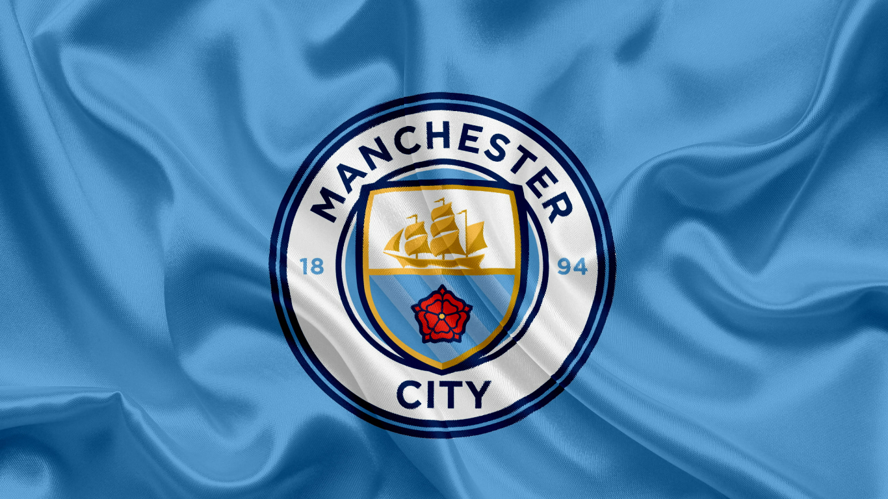

Man City

-
Goalkeaper
- Ederson
- Scott Carson
- Zack Steffen
-
DEFENDERS
- Nathan Aké
- Rúben Dias
- Aymeric Laporte
- Kyle Walker
- John Stones
- Sergio Gómez
- Benjamin Mendy
-
MIDFIELDERS
- Kevin De Bruyne
- Phil Foden
- İlkay Gündoğan
- Bernardo Silva
- Rodri
- Kalvin Phillips
- Cole Palmer
-
FORWARDS
- Jack Grealish
- Erling Haaland
- Riyad Mahrez
- Julián Álvarez